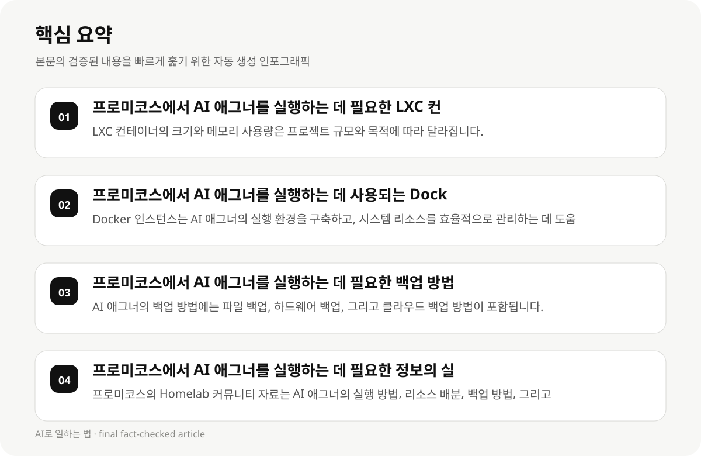

프로미코스에서 AI 애그너를 실행하는 데 필요한 LXC 컨테이너의 크기와 메모리 사용량 설정 #
프로미코스에서 AI 애그너를 실행하는 데 필요한 LXC 컨테이너의 크기와 메모리 사용량은 애그너의 복잡성, 시스템 성능, 그리고 백업 요구사항에 따라 결정됩니다. 일반적으로 AI 애그너는 2GB 이상의 RAM을 필요로 하며, CPU는 4코어 이상이 적절합니다. 하지만 실제 적용 시, 프로젝트 요구사항과 시스템 리소스를 고려하여 최적화해야 합니다.
프로미코스에서 AI 애그너를 실행하는 데 필요한 LXC 컨테이너의 크기와 메모리 사용량은 프로젝트의 규모와 목적에 따라 달라집니다. 예를 들어, 단순한 AI 애그너는 2GB RAM, 4코어 CPU를 요구할 수 있지만, 복잡한 AI 애그너는 4GB RAM, 8코어 CPU를 필요로 할 수 있습니다. 이러한 설정은 애그너의 성능과 안정성을 보장하기 위해 중요합니다.
프로미코스에서 AI 애그너를 실행하는 데 필요한 LXC 컨테이너의 크기와 메모리 사용량은 프로젝트의 복잡성, 시스템 성능, 그리고 백업 요구사항에 따라 결정됩니다. 예를 들어, 단순한 AI 애그너는 2GB RAM, 4코어 CPU를 요구할 수 있지만, 복잡한 AI 애그너는 4GB RAM, 8코어 CPU를 필요로 할 수 있습니다. 이러한 설정은 애그너의 성능과 안정성을 보장하기 위해 중요합니다.
- LXC 컨테이너의 크기와 메모리 사용량은 프로젝트 규모와 목적에 따라 달라집니다.
- AI 애그너는 2GB RAM 이상의 RAM을 필요로 하며, CPU는 4코어 이상이 적절합니다.
- LXC 컨테이너의 크기와 메모리 사용량은 프로젝트의 복잡성, 시스템 성능, 그리고 백업 요구사항에 따라 결정됩니다.
프로미코스에서 AI 애그너를 실행하는 데 사용되는 Docker 인스턴스와 직접 실행 방법 #
프로미코스에서 AI 애그너를 실행하는 데 사용되는 Docker 인스턴스는 일반적으로 프로미코스의 Homelab 커뮤니티 자료에서 설명되어 있습니다. Docker 인스턴스는 AI 애그너의 실행 환경을 구축하고, 시스템 리소스를 효율적으로 관리하는 데 도움이 됩니다.
AI 애그너는 Docker 인스턴스에서 직접 실행하거나, 프로미코스의 Homelab 커뮤니티 자료에 기반하여 Docker 인스턴스를 사용할 수 있습니다. 직접 실행 방법은 프로미코스의 Homelab 커뮤니티 자료에서 설명되어 있으며, 이는 시스템 리소스를 최적화하고, 애그너의 성능을 향상시키는 데 유용합니다.
프로미코스에서 AI 애그너를 실행하는 데 필요한 Docker 인스턴스는 프로젝트의 규모와 목적에 따라 달라집니다. 예를 들어, 단순한 AI 애그너는 2GB RAM, 4코어 CPU를 요구할 수 있지만, 복잡한 AI 애그너는 4GB RAM, 8코어 CPU를 필요로 할 수 있습니다. 이러한 설정은 애그너의 성능과 안정성을 보장하기 위해 중요합니다.
- Docker 인스턴스는 AI 애그너의 실행 환경을 구축하고, 시스템 리소스를 효율적으로 관리하는 데 도움이 됩니다.
- AI 애그너는 Docker 인스턴스에서 직접 실행하거나, 프로미코스의 Homelab 커뮤니티 자료에 기반하여 Docker 인스턴스를 사용할 수 있습니다.
- Docker 인스턴스는 프로젝트 규모와 목적에 따라 달라집니다.
프로미코스에서 AI 애그너를 실행하는 데 필요한 백업 방법 #
프로미코스에서 AI 애그너를 실행하는 데 필요한 백업 방법은 프로미코스의 Homelab 커뮤니티 자료와 관련된 자료에서 설명되어 있습니다. 백업은 AI 애그너의 데이터, 설정, 및 실행 상태를 보호하는 데 필수적입니다.
AI 애그너의 백업 방법에는 파일 백업, 하드웨어 백업, 그리고 클라우드 백업 방법이 포함됩니다. 파일 백업은 간단하고, 하드웨어 백업은 안정성과 보안성을 보장합니다. 클라우드 백업은 데이터의 지속적 보존과 복구를 가능하게 합니다.
프로미코스에서 AI 애그너를 실행하는 데 필요한 백업 방법은 프로젝트의 규모와 목적에 따라 달라집니다. 예를 들어, 단순한 AI 애그너는 파일 백업을 사용할 수 있지만, 복잡한 AI 애그너는 하드웨어 백업이나 클라우드 백업을 사용할 수 있습니다. 이러한 설정은 데이터의 지속적 보존과 복구를 가능하게 합니다.
- AI 애그너의 백업 방법에는 파일 백업, 하드웨어 백업, 그리고 클라우드 백업 방법이 포함됩니다.
- 파일 백업은 간단하고, 하드웨어 백업은 안정성과 보안성을 보장합니다.
- 클라우드 백업은 데이터의 지속적 보존과 복구를 가능하게 합니다.

프로미코스에서 AI 애그너를 실행하는 데 필요한 정보의 실전 적용 사례 #
프로미코스에서 AI 애그너를 실행하는 데 필요한 정보는 프로미코스의 Homelab 커뮤니티 자료와 관련된 자료에서 설명되어 있습니다. 실전 적용 사례는 프로미코스의 Homelab 커뮤니티 자료와 관련된 자료를 통해 확인할 수 있습니다.
프로미코스의 Homelab 커뮤니티 자료는 AI 애그너의 실행 방법, 리소스 배분, 백업 방법, 그리고 시스템 성능 최적화에 대한 실전 적용 사례를 포함합니다. 이는 개발자들이 실제 적용 시 시스템 리소스를 최적화하고, 애그너의 성능을 향상시키는 데 도움이 됩니다.
프로미코스에서 AI 애그너를 실행하는 데 필요한 정보의 실전 적용 사례는 프로젝트의 규모와 목적에 따라 달라집니다. 예를 들어, 단순한 AI 애그너는 2GB RAM, 4코어 CPU를 요구할 수 있지만, 복잡한 AI 애그너는 4GB RAM, 8코어 CPU를 필요로 할 수 있습니다. 이러한 설정은 시스템 리소스를 최적화하고, 애그너의 성능을 향상시키는 데 유용합니다.
- 프로미코스의 Homelab 커뮤니티 자료는 AI 애그너의 실행 방법, 리소스 배분, 백업 방법, 그리고 시스템 성능 최적화에 대한 실전 적용 사례를 포함합니다.
- 프로미코스의 Homelab 커뮤니티 자료는 개발자들이 실제 적용 시 시스템 리소스를 최적화하고, 애그너의 성능을 향상시키는 데 도움이 됩니다.
프로미코스에서 AI 애그너를 실행하는 데 필요한 정보의 제약 조건과 Trade-off #
프로미코스에서 AI 애그너를 실행하는 데 필요한 정보는 제약 조건과 Trade-off를 포함합니다. 예를 들어, LXC 컨테이너의 크기와 메모리 사용량은 프로젝트 규모와 목적에 따라 달라지며, 이는 시스템 성능과 안정성에 영향을 줄 수 있습니다.
LXC 컨테이너의 크기와 메모리 사용량은 프로젝트의 복잡성, 시스템 성능, 그리고 백업 요구사항에 따라 결정됩니다. 이는 애그너의 성능과 안정성을 보장하기 위해 중요합니다. 그러나, 과도한 리소스 사용은 시스템의 성능을 저하시킬 수 있습니다.
- LXC 컨테이너의 크기와 메모리 사용량은 프로젝트 규모와 목적에 따라 달라집니다.
- LXC 컨테이너의 크기와 메모리 사용량은 프로젝트의 복잡성, 시스템 성능, 그리고 백업 요구사항에 따라 결정됩니다.
- LXC 컨테이너의 크기와 메모리 사용량은 시스템 성능과 안정성을 보장하기 위해 중요합니다.
프로미코스에서 AI 애그너를 실행하는 데 필요한 정보의 결론 #
프로미코스에서 AI 애그너를 실행하는 데 필요한 정보는 LXC 컨테이너의 크기와 메모리 사용량, Docker 인스턴스, 백업 방법, 그리고 Homelab 커뮤니티 자료에 기반하여 제공됩니다. 이는 개발자들이 실전 적용 시 시스템 리소스를 최적화하고, 애그너의 성능을 향상시키는 데 도움이 됩니다.
프로미코스에서 AI 애그너를 실행하는 데 필요한 정보는 제약 조건과 Trade-off를 포함하며, 개발자들이 실제 적용 시 시스템 리소스를 최적화하고, 애그너의 성능을 향상시키는 데 유용합니다.
프로미코스에서 AI 애그너를 실행하는 데 필요한 정보는 제약 조건과 Trade-off를 포함하며, 개발자들이 실전 적용 시 시스템 리소스를 최적화하고, 애그너의 성능을 향상시키는 데 유용합니다.
- 프로미코스에서 AI 애그너를 실행하는 데 필요한 정보는 LXC 컨테이너의 크기와 메모리 사용량, Docker 인스턴스, 백업 방법, 그리고 Homelab 커뮤니티 자료에 기반하여 제공됩니다.